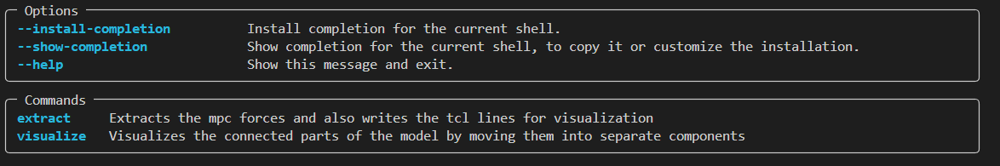

Quickstart
CLI
To install this tool, you can simply use the pip install command like so:
pip install mpcforces-extractor
After installing it, you can access the cli tool via: mpcforces-extractor which will give you the following output:

Command: mpcforces-extractor extract
The main command is the extract command. This command will extract the mpc forces from the mpcf file and will output the summed up forces per connected part. The ouptput will be a text file with the summed up forces per connected part.
Additionally the tcl code needed for visualizing the connected parts in HyperMesh will be generated. The tcl code will be saved in the same directory as the output file in the subfolder tcl-visualization.
The command wants you to provide the path to the .fem model file as well as the path to the .mpcf file. Lastly, the output file path is needed. The blocksize is optional and is needed for reading the files. The default value is 8 (8 chars per field in line). For long ouptut it is recommended to increase the blocksize to 16 (not tested).
Command: mpcforces-extractor visualize
The command visualize visualizes the connected parts in HyperMesh. The command wants you to provide the path to the .fem model file as well as the path to the output directory. The tcl file is the output of the extract command.
Know issue: If a compornent in the hypermesh model is named part1, part2, etc. the tcl script might not work as intended. This is due to the fact that the tcl script is using the part name to create the groups.
Taskfile
The below described approach is for more development oriented people. If you are not interested in this, you can skip this section and use the CLI tool described above.
The project has a Taskfile.yaml for your conveinience. Taskfile is an executeable file which you can download on: Taskfile and it makes your life easier.
In the Taskfile you have commands available to start the program namely:
task run
which does the following:
poetry run python -m mpcforces_extractor.main
alternatively you can start the tool also with the python -m command.